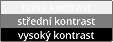

Barvy
Všude kam se podíváme vidíme barvy. Jsou součástí našeho života a v grafickém designu hrají velmi důležitou roli. Porozumění barvám, tomu jak je vidíme, jak je správně kombinovat a co v nás různé barvy vyvolávají, nám pomůže stát se lepším designérem.
Co je barva
Barva je vlastnost, kterou vidíme, když interagujeme se světlem a objektem. Světlo cestuje ve vlnách a když různé vlnové délky dorazí k našim očím, tak vidíme něco, čemu se říká barva. Největším zdrojem světla v našem solárním systému je samozřejmě slunce. To vyzařuje čistě bílé světlo. Ve skutečnosti ale vlastně vůbec bílé není. Jedná o kombinaci všech vlnových délek zkombinovaných dohromady. Když se všechny vlnové délky zkombinují a jsou odraženy do našich očí, tak vidíme bílou barvu.
Každá barva, tak jak ji známe, je ve skutečnosti jen různá vlnová délka. Červená je nejdelší vlnová délka s malou frekvencí. Oranžová je menší vlnová délka než červená, žlutá je menší než oranžová, a tak dále. Nejkratší vlnovou délku s nejvyšší frekvencí má fialová barva. Jakmile se vlnová délka stane kratší než fialová, dostaneme utrafialovou barvu, která již není lidským okem přirozeně vnímána.

Když světlo cestuje ze slunce, tak naráží na různé objekty. Různé vlnové délky mohou být objektem buď absorbovány nebo odraženy do našich očí. Díky tomu vidíme různé barvy. Pokud například vidíme červené jablko, je to proto že tento objekt absorbuje všechny barvy kromě červené, která je k nám odražena. Pokud vidíme něco bílého, tak to znamená že objekt neabsorbuje žádné vlnové délky a všechny se od něj odrazí. Pokud naopak vidíme něco černého, tak to znamená že objekt absorbuje všechny vlnové délky a žádné od něj nejsou odraženy.
Díky tomu, že jako designéři budeme znát základní principy světla a barev, budeme mít lepší základy pro pochopení, jak barva funguje v různých médiích. V digitálních obrázcích, tisku, nebo jakémkoliv jiném médiu.
Vlastnosti barev
Když se rozhlédneme kolem sebe, můžeme vidět obrovské množství různých barev. Známe primární barvy jako je červená, zelená, modrá, fialová, žlutá, a tak dále. Každá tato barva má ale nesmírně mnoho variací. Podle vlastností jako je její tmavost, světlost nebo třeba intenzita, získáme spektrum všemožných barev. V designu u barev rozlišujeme různé vlastnosti, které jsme v grafických programech většinou schopni nějakým způsobem měnit.
Hue (odstín)
Vlastnost hue je ve své nejjednodušší podobě něco, čemu říkáme barva. Definujeme odstín barvy bez přidání bílé, černé, nebo šedé barvy.
Saturation (sytost)
Vlastnost saturation popisuje intenzitu (sytost) barvy. Pokud je barva plně nasycena, tak ji vidíme v jejím čistém odstínu. Pokud barva nemá žádnou sytost, tak vidíme šedou barvu.
Value (jas)
Vlastnost value popisuje světlost nebo tmavost barvy. V tisku nebo třeba v malování je to řízeno používáním více nebo méně černé, bílé nebo šedé barvy. Stejného efektu jde dosáhnout také u digitálních médií.
Podle toho jestli do barvy přidáme bílou, černou nebo šedou barvu, získáme buď 'tint', 'shade' nebo 'tone' barvy. Tyto termíny se v grafickém designu občas používají, takže je dobré je znát.
- Tint - barva, kterou získáme přidáním bílé barvy
- Tone - barva, kterou získáme přidáním šedé barvy
- Shade - barva, kterou získáme přidáním černé barvy
Brightness (jas)
Vlastnost brightness je stejná jako vlastnost value. Brightness definuje, kolik světla vyzařuje nějaký objekt.
Lightness (světlost)
Vlastnost lightness určuje světlost barvy. Vlastnosti value a brightness jsou použity v barevných modelech HSV nebo HSB, ale pokud chceme namísto jasu nastavovat světlost, tak můžeme použít barevný model HSL.
Kontrast
Kontrast je rozdíl mezi vlastnostmi barev jako je hue, saturation a value. Nejedná se tedy o vlastnost, která by se jednala přímo nějaké barvy, ale jde o rozdíl mezi dvěma nebo více barvami.
Mezi textem a jeho pozadím by měl být dostatečně vysoký kontrast, aby jej mohl čtenář snadno přečíst. Pro jiné věci, které slouží spíš jen k dekorativním účelům, již tak vysoký kontrast být samozřejmě nemusí.
Systémy míchání barev
Jak asi víte, smícháním dvou nebo více barev můžeme vytvářet nové barvy. Pokud jste někdy malovali například temperovými barvami, tak jste je možná míchali různě dohromady k vytvoření nových barev. V digitálním designu ale míchání barev funguje trochu jinak. Existují dva hlavní systémy míchání barev: aditivní a substraktivní. Monitory používají aditivní systém míchání barev, zatímco třeba pro tisk se používá substraktivní systém míchání barev.
Aditivní míchání barev
Aditivní systém míchání barev je vhodný pro všechno, co používá světlo. Funguje tak, že se ke tvorbě celého spektra barev používají světla. S aditivním mícháním barev se setkáváme v monitorech, televizích, mobilních displejích, a tak dále. Jednotlivé pixely v monitorech totiž v podstatě vyzařují světlo a tak se pro tvorbu barev míchají světla různých vlnových délek. Jak přesně to funguje se můžete dočíst níže v části 'Jak jsou barvy uloženy digitálně'.
Substraktivní míchání barev
Substraktivní systém míchání barev se používá pro všechno, co nepoužívá světlo. Funguje tak, že jsou barvy absorbovány do objektu. Vezměmě si třeba temperové barvy. Fialová barva absorbuje zelenou barvu a odráží modrou a červenou. Žlutá zase absorbuje modrou a odráží zelenou a červenou. Když je smícháme dohromady, tak vznikne červená barva, protože zelená a modrá bude absorbována. Substraktivní systém míchání barev se používá třeba v tiskárnách, které používají barevný model CMYK. Tento model používá tyrkysovou, purpurovou, žlutou a černou barvu k vytvoření celého spektra barev. Černá barva se používá kvůli tomu, že když smícháme dohromady tyrkysovou, purpurovou a žlutou barvu, tak při tisku nedostaneme moc pěknou černou barvu.
Barevné modely
K uložení barvy v počítačové grafice musíme být schopni nějakým způsobem popsat, o jakou barvu se přesně jedná. Pro tento účel tedy vznikly různé barevné modely s jejichž pomocí můžeme přesně určit, kterou barvu chceme uložit. Ty nejznámější jsem tu popsal. O ostatních pravděpodobně nemusíte ani vědět, slouží spíš pro nějaké speciální účely.
RGB
Aditivní barevný model RGB používá k popisu barvy červený, zelený a modrý kanál. Je založen na faktu, že lidské oko je na tyto tři barvy citlivé a ostatní barvy jsou dány jejich sytostí.
Kromě definování hodnot pro jednotlivé barevné kanály se můžete v některých případech setkat také s hexadecimálním zápisem barvy tohoto barevného modelu. Ten se často používá například při tvorbě webových stránek. Vypadá nějak takto:
První dva znaky definují hodnotu červeného kanálu, další dva znaky definují hodnotu zeleného kanálu a poslední dva znaky definují hodnotu modrého kanálu. Každý znak nastavujeme na hodnotu od 0 do F (0-9 a A-F). Máme tedy pro každý znak 16 možností. Pro každý kanál máme k dispozici dva znaky, takže máme 16*16 možností, čož je 256.
CMYK
Substraktivní barevný model CMYK používá k popisu barvy tyrkysovou, purpurovou, žlutou a černou barvu. Používá se v tiskárnách. Smíchání tyrkysové, purpurové a žluté barvé sice vznikne barva černá, ta ale bohužel není příliš kvalitní, proto se pro tisk přidává ještě samostatná černá barva. Jejím přidáním se zároveň snižují náklady na tisk.
HSV / HSB
Barevný model HSV nebo HSB používá k popisu barvy vlastnosti hue (odstín), saturation (sytost) a value (jas). Pomocí těchto vlastností se nám barvy popisují intuitivněji než pomocí jiných barevných modelů.
HSL
Barevný model HSL je velmi podobný HSV. Namísto jasu zde ale nastavujeme světlost (lightness).
Jak jsou barvy uloženy digitálně
Ukládání barev v digitálních médiích a třeba na papíře se samozřejmě liší. Na papír jen nějakým způsobem naneseme barvu a máme ji uloženou. V počítači musíme mít nějaký jiný způsob jak barvy ukládat nebo reprezentovat. Jak jsem již psal výše, pro tento účel vznikly různé barevné modely.
Pixel
Monitory používají ke tvorbě barev barevný model RGB. Každý monitor obsahuje nějaké množství malých čtverečků, kterým se říká pixely. Každý pixel na monitoru slouží k zobrazení nějaké konkrétní barvy. Ta je vytvořena podle toho, jak moc svítí červená, zelená a modrá barva daného pixelu. Podle toho kolik má monitor k dispozici pixelů, se určuje jeho rozlišení. Standardní rozlišení je dnes 1920x1080 pixelů, což je dohromady 2 073 600 pixelů.
S pojmem pixel se nesetkáváme jen u monitorů, televizí a dispejů mobilních telefonů. Digitální obrázky se stejně jako monitor také skládají ze čtverečků, kterým se říká pixely. Různé obrázky mohou obsahovat různé množství pixelů. Čím více pixelů obrázek má, tím víc je ostřejší, ale může zabírat více místa. Hodně ale také záleží na formátu, ve kterém je obrázek uložen. Některé formáty totiž provádějí kompresy a obrázek tak může zabrat méně místa. Kromě rastrových formátů, které ukládají obrázky pomocí pixelů, existují také vektorové formáty. Ty fungují tak, že namísto toho aby se obrázek ukládal pomocí pixelů, používají se různé matematické vzorce, které vytvářejí různé křivky a tak podobně. Pokud si tedy přiblížíme vektorový obrázek, bude stále ostrý. To už se ale tolik netýká barvy, takže se grafickými formáty nebudeme zabývat.
Hustota pixelů
Kromě toho, že rozlišujeme různé rozlišení zobrazovacích zařízení a obrázků, můžeme rozlišovat také hustotu pixelů. Ta se většinou měří v pixelech na palec. Podle toho, kolik napočítáme pixelů na délku jednoho palce, tolik pixelů na palec obrázek nebo třeba monitor má. Pixely na palec se většinou píší jako PPI, což je zkratka pro Pixels Per Inch (pixely na palec). V tisku se ale můžeme setkat také se zkratkou DPI, což znamená Dots Per Inch (tečky na palec). Určuje se tedy kolik teček pigmentu bude naneseno na jeden palec. Kolik DPI použijeme v tisku nehraje zas tak moc velkou roli, jde nám jen o to, aby byl obrázek co nejostřejší. Pro obrázky webových stránek to ale například již roli hraje, protože chceme kvalitní obrázek, ale také nechceme aby se nám načítal moc dlouhou dobu. Typická hustota pixelů pro obrázky webových stránek je 72 PPI, to se ale samozřejmě může měnit podle našich potřeb.
Bitová hloubka
Vlastnost, která určuje množství barev, které mohou být aplikovány na obrázek, se nazývá bitová hloubka. Určuje množství barev, které mohou být uloženy v jednom kanálu. Pokud máme k dispozici 1 bit, tak můžeme vytvořit dvě barvy: černou nebo bílou. Pokud máme k dispozici 2 bity, tak můžeme vytvořit 4 barvy, a tak dále. V počítači jsou čísla uložena binárně, takže se k popisu čísla namísto znaků 0-9 používají jen znaky 0-1. Pokud máme k dispozici jen jeden znak (1 bit), tak můžeme zapsat jen 0 nebo 1, pokud máme dva znaky (2 bity), tak můžeme zapsat 00, 01, 10 nebo 11. Čím více bitů máme k dispozici, tím máme více možností. Nejpoužívanější bitová hloubka je 8 bitů.
- 1 Bit - 2 barvy na jeden kanál
- 2 Bity - 4 barvy na jeden kanál
- 3 Bity - 8 barev na jeden kanál
- 4 Bity - 16 barev na jeden kanál
- 8 Bitů - 256 barev na jeden kanál (dobré pro web design)
- 16 Bitů - 65 536 barev na jeden kanál (dobré pro tisk)
- 32 Bitů - 16 777 215 barev na jeden kanál
Harmonie barev
Dobrá harmonie barev je základ pro jakýkoliv design nebo umělecké dílo. Barvy mohou vyjadřovat náladu nebo emoce, a můžeme s jejich pomocí diváka třeba upozornit aby se podíval tam kam chceme. Výběr barev je velmi důležitý. Pokud si pro náš design ale vybereme barvy jen tak náhodně, tak se k sobě nemusí hodit. Proto existují různá barevná schémata, díky kterým si můžeme vybrat barvy, které se k sobě hodit budou.
Monochromatic
Toto barevné schéma používá k vytvoření palety barev odstíny jedné primární barvy.
Analogous
Toto barevné schéma používá k vytvoření palety barev barvy, které jsou na barevném kole vedle sebe.
Complementary
Toto barevné schéma používá k vytvoření palety barev dvě barvy, které jsou na barevném kole naproti sobě.
Split-Complementary
Toto barevné schéma používá k vytvoření palety barev jednu primární barvu a dvě barvy, které jsou na barevném kole vedle její protější barvy.
Triadic
Toto barevné schéma používá k vytvoření palety barev tři barvy, které na barevném kole tvoří trojúhelník.
Tetradic
Toto barevné schéma používá k vytvoření palety barev dva páry barev nacházejících se na barevném kole vedle dvou protějších barev.
Square
Toto barevné schéma používá k vytvoření palety barev čtyři barvy, které na barevném kole tvoří čtverec.
Jak na nás barvy působí
Barvy mohou psychologicky změnit to, jak vnímáme svět kolem sebe. Mohou v nás vyvolávat pocit štěstí, smutku, optimismu a mnoho dalších. Jak jsme se vyvíjeli, tak jsme různé barvy přiřadili různým věcem a ty se nám mohou při pozorování barvy vybavit. Například různé druhy jídla můžeme mít spojeny s určitými barvami. Není náhoda že hlavní potravinové řetězce používají tyto barvy v jejich značce.
Barvy mohou mít specifické významy, které se mohou měnit podle kultury člověka, který si náš design prohlíží. Zde jsem jich pár vypsal, ale nejedná se o kompletní list. Pokud chcete něco rozsáhlejšího, tak doporučuji podívat se například na tento plakát.
upozornění
láska
umění
jídlo
pozornost
zábava
klid
země
věrnost
bezpečí
hrdost
luxus
poctivost
příroda
komunikace
vyrovnanost
disciplína
elegance
nevinnost
světlo
Kromě toho že barvy mohou mít různé významy, mohou být také studené nebo teplé, což je také spojeno s jejich psychologickým vnímáním. Pokud totiž vidíme teplé barvy jako je červená, oranžová nebo žlutá, tak se nám může vybavit oheň a teplo. Barvy jako je zelená, modrá a fialová naopak většinou vnímáme jako studené.
Výběr barev
Pokud jste si přečetli předchozí text o harmonii barev a o tom jak na nás působí, tak si myslím, že pro vás teď bude výběr barev pro váš design o dost jednodušší. Teorie je dobrá, ale pokud nezačnete vytvářet design a vybírat si barvy sami, tak nepoznáte svůj vlastní proces pro výběr barev. Není striktně dáno jakým způsobem bychom měli barvy vybírat. Většinou je to také hodně o experimentování a zkoušení co vypadá dobře a co ne.
Myslím že pro vás již nemám žádné další rady pro výběr barev. Možná jen tuto poslední. Pokud vybíráme barvy například pro nějaké logo, tak bychom měli vědět na jakém pozadí se bude nacházet. Pokud totiž vytvoříme třeba bílé logo a umístíme jej na nějakou bílou plochu, tak samozřejmě nepůjde vidět, takže na to musíme při výběru barvy již ze začátku myslet.
Výběr barev podle obrázku
Pokud narazíme na fotku obsahující barvy, které se nám líbí, tak s její pomocí můžeme klidně vytvořit paletu barev. Tuto paletu můžeme použít buď jen pro inspiraci, nebo ji použít v našem designu. K získání palety barev z obrázku existují různé webové nástroje. Například Canva má k tomuto účelu speciální nástroj. Dále to jde udělat třeba v Adobe Color.